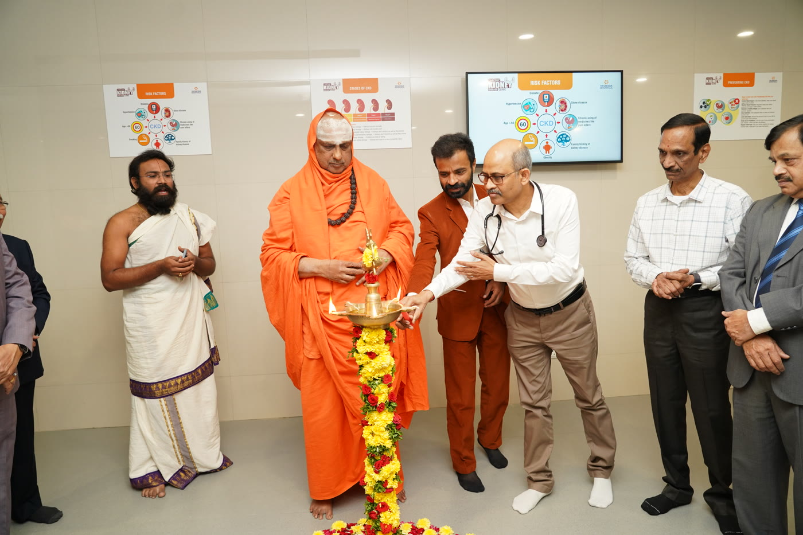

We are a coalition of nephrologists, cardiologists, industry leaders, social entrepreneurs and community volunteers, united by one conviction: kidney disease is preventable, if we act early enough.


We are CfyKF — Care For Your Kidney Foundation. Our founder trustees and program staff are a group of highly accomplished individuals, with great commitment to the common cause of kidney care. We have great diversity and unique skill sets in our team, with eminent nephrologists, cardiologists, captains of industry, social entrepreneurs, technology champions, community leaders etc., leading this initiative.
CfyKF will pioneer a lot of awareness creation and preventive programs, apart from developing its own protocols for community-based treatment and research programs. A problem of such magnitude can be addressed only if large organisations, individuals and all stakeholders come together at a national and global level.
Our Vision is to substantially reduce the incidence of kidney diseases in India through awareness and prevention, in active partnership with all like-minded parties. Our approach is to focus much more on the awareness and preventive care programs, and substantially reduce the number of people reaching the end-stage kidney failure stage.
Screening camps and awareness drives help detect kidney issues early.
Subsidised dialysis and treatment support for those in need.
Partnering with communities to build a healthier, stronger tomorrow.


Mr. Narendra Paruchuri, Dr. R. Chakravarthi, Mr. Joseph Vargeese, Mr. Jayaraj and Mr. Bhaskar Gadapally came together to found Care for Your Kidney Foundation (CFYKF) in 2015, with the twin aims of increasing awareness about CKD, and prevention of CKD in the general population.
Why CFYKF exists — the numbers behind the urgency.
India has the largest incidence of kidney diseases in the world, with 17% of its 1.2 billion population having some incidence of kidney disease in their lifetime. At any given time, there are 3 million people battling end-stage kidney failure. Less than 5% of them have regular access to dialysis centres, and many of them cannot afford the high cost of dialysis. Fewer than 5,000 kidney transplants are conducted in India every year. It is estimated that more than 2 million people die of end-stage kidney failure or its related complications. And over 50% may not even get to know that they are suffering from kidney failure. If few of them get eventually treated, it is for some related symptom like blood pressure, diabetes, breathlessness etc.
This monumental problem needs to be addressed immediately, on a war footing, as a national priority. A holistic program plan should be designed, consisting of the full gamut of awareness creation, prevention and treatment, intended to reach every citizen of India in a short span of time.
CfyKF is founded with the sole intent of playing a significant role in making this change happen, which will save millions of lives in the coming years.
To create a large platform of alliance partners committed to fighting kidney diseases and substantially reducing kidney failure, consisting of other Foundations and NGOs, Public and Private hospitals, National and State governments, Schools and Colleges, Research and Training Institutions, Policy makers, Media, kidney patients and their family members, urban and rural communities, with the common objective of bringing about a paradigm shift in awareness creation, prevention, detection and treatment of kidney diseases in India and other developing countries, in order to drastically reduce the incidence of kidney diseases.
To substantially reduce the incidence of kidney diseases in India through continuous awareness creation and early prevention, in active partnership with all like-minded parties. To reduce the incidence and kidney disease burden in India by 50% by 2025.
Create a common platform of alliance partners — NGOs, Public and Private Hospitals, National and State governments, Universities & Research Institutions, Policy makers, Training Institutes, donors, patients etc. — all united in the common cause of kidney care.
Data, knowledge base and medical protocols, gained from kidney patients and their family members through screening and tracking of urban and rural communities, to be disseminated online, and through mass media, conferences and training.
Create a paradigm shift in awareness creation, prevention, detection and treatment of kidney diseases in India. Move from Reactive to Proactive.
Technology for research, early detection and easy & cost-effective treatment.
Pioneer innovative methodologies in knowledge creation and dissemination, community programs, research and training, etc., for large impact in a short period.
Our end-to-end approach ensures that every individual receives the right care, at the right time.
We go into communities with awareness drives and health education.
Early screening and diagnostics to detect kidney issues early.
Detailed evaluation and guidance for patients and families.
Affordable treatment, dialysis and emotional support for patients.
Continuous follow-up and care for a better quality of life.
Founder trustees leading CFYKF with single-minded devotion to the cause of kidney care.

Narendra Paruchuri graduated in Chemical Engineering from the Manipal Institute of Technology in 1975. He worked in a metal finishing company for two-and-a-half years, then joined Pragati Offset Pvt. Ltd., a commercial printing press started by his father Sri Paruchuri Hanumantha Rao in 1962.
Narendra was instrumental in upgrading the press with the latest technologies, and building a team that was professional in every way. Tech-follower to tech-leader — Pragati traversed the path rapidly, making it a pioneer in many facets of the printing industry. A firm believer in delivering customer delight — in terms of quality, service and timeliness — he has made Pragati an extension of the customers' team, rather than just another supplier.
He is ably supported by his brother Mahendra, and sons Harsha and Hemanth. Their hard work and keenness to excel has placed Pragati where it is today — among the best printers in the world — winner of the SAPPI International Printer of the Year award in 2006, 2008 and 2010.
Married to Dr. Sasikala, Narendra enjoys his leisure time with his family, and playing with his grandchildren Samhitha and Pranav.
SAPPI Printer of the Year · 2006 · 2008 · 2010
Dr. Rajasekara Chakravarthi Madarasu is a Consultant Nephrologist at STAR Hospitals, Hyderabad. He has been practising as a Nephrologist since 1997, working at Chennai, Mysore, and at Hyderabad since 2002.
He has a keen interest in community nephrology, where prevention of kidney disease is the main focus. He also has an interest in Acute Kidney Injury (AKI), and is a member of the AKI Committee of the International Society of Nephrology (ISN). He is a reviewer for the Indian Journal of Nephrology and the Indian Heart Journal.
He is invited faculty of the National Institute of Nutrition (NIN), and adjunct faculty for JSS University, Mysore. He has over 42 publications in national and international journals, including Nature, CJASN, Kidney International, and Contributions to Nephrology.
42+ Publications · Nature · CJASN · Kidney International
Verghese Jacob, B.Tech, MBA, with over 40 years' management experience in corporate and social sectors, is a Management Consultant cum Social Entrepreneur. He has worked with major corporates like the Godrej Group, managed many charitable foundations, and championed several social causes.
Verghese has successfully undergone kidney transplant surgery twice in the last 18 years. He brings the unique combination of the patient's perspective and social sector experience to our Foundation.
Two-Time Kidney Transplant RecipientDistinguished voices in nephrology, medicine and public life who guide CFYKF's direction.
Pioneer of Community Nephrology in India — the physician CFYKF's annual oration is named in honour of. See the oration →
Advisory Board Member
Advisory Board Member
Free medical screening, data collation and research in an inner city dwelling — Devarkonda Basti, Hyderabad, Telangana state, India.
To set up preventive clinics in communities, both rural and urban, in partnership with local Primary Health Centres, schools, religious institutions, other NGOs and alliance partners, to disseminate knowledge and increase awareness of various kidney diseases and their prevention. To collaborate with existing hospitals to include awareness and prevention education for all their patients with diabetes and hypertension.
To provide diagnostic tools to each clinic/centre to diagnose kidney disease early and follow up with the latest protocols, by trained personnel, to delay progression of kidney disease to more severe stages. To provide awareness creation material and posters in these clinics.
To partner with the government, NRHM, Public Health Foundation and other similar partners for influencing public policy, increasing national funding and rolling out preventive and curative programs for all types of kidney diseases in all government hospitals and public health centres.
To advise and counsel patients for dialysis and kidney transplantation, whenever necessary, and subsidise cost of transplantation, including immunosuppressive medications which have to be taken life-long.
To conduct training activities in the field of kidney diseases in India and abroad, with other NGOs, hospitals, State Governments, NRHM and public health organisations.
To conduct regular workshops / training sessions for nurse practitioners/doctors, who are caregivers in these centres. Create a multi-media awareness and prevention communication material kit, which can be disseminated nationally.
To periodically conduct conferences and presentation of papers on latest learnings, research findings and best practices in kidney care, with international participation.
To set up preventive clinics in communities, both rural and urban, in partnership with local Primary Health Centres, schools, religious institutions, other NGOs and alliance partners, to disseminate knowledge and increase awareness of various kidney diseases and their prevention. To collaborate with existing hospitals to include awareness and prevention education for all their patients with diabetes and hypertension.

Every decision starts with what's best for the patient.
We break barriers so that care is within everyone's reach.
We ensure the highest standards in every service we provide.
We treat every patient with dignity and empathy.
We operate with honesty, accountability, and fairness.
We work with communities to create lasting impact.
We embrace new ideas and technology for better outcomes.
We learn, adapt, and improve every single day.
We build programs that create change for generations.
To advise and counsel kidney patients and their family members for preventive care and best treatment options.
To provide tools to each clinic to diagnose early, and follow these centres with an approach based on the latest protocols, by trained personnel, to delay progression to more severe stages.
To undertake data analysis and research on kidney diseases, based on our work with communities, and publish and share the findings with others.
To identify the persons with kidney disease, with both acute and chronic symptoms, counsel them on how best to manage and cope with the disease, and connect them to the nearest treatment centres.
To conduct training activities in the field of kidney diseases in India and abroad, with other NGOs, hospitals, State Governments, NRHM and public health organisations.
To substantially improve access to dialysis for all needy patients, through influencing public health policy and advocacy for increasing the number of dialysis centres and clinics across the country, and having alliances with major dialysis centres for subsidised treatment.
To partner with the government, NRHM, Public Health Foundation and other similar partners for influencing public policy, increasing national funding and rolling out preventive and curative programs for all types of kidney diseases in all government hospitals and public health centres.
To set up preventive clinics in both rural and urban areas, in partnership with local Primary Health Centres, schools, religious institutions, other NGOs and alliance partners, to disseminate knowledge and increase awareness of various kidney diseases and their prevention.
To conduct regular awareness programs in various places, in partnership with other NGOs, foundations, private hospitals and public health centres, so that we can educate and interact with the public on kidney diseases, and disseminate the same through print and audio-visual media. Create a very powerful multi-media awareness and prevention communication kit, which can be disseminated nationally.
To conduct regular workshops / training sessions for nurse practitioners/doctors, who are caregivers in these centres.
To periodically conduct conferences and presentation of papers on latest learnings, research findings and best practices in kidney care, with international participation.
To subsidise the cost of medicines, dialysis and consumables for patients, through donors and alliances with pharma companies and hospitals.
No single organisation has attempted such a new approach for kidney care in India, by bringing together all organisations, professionals, policy makers, patients and communities on the same platform, with a single-minded goal of significantly reducing kidney diseases and failures across the country. Also, many existing organisations are focusing on secondary and tertiary care, whereas CFYKF will pioneer a lot of awareness creation and preventive programs, apart from developing its own protocols for community-based treatment programs.
Our founder trustees, caregivers, program staff and alliance partners are highly committed, with single-minded devotion to the common cause of kidney care. We have great diversity and unique skill sets in our team, with eminent nephrologists, cardiologists, captains of industry, social entrepreneurs, technology leaders, community leaders, etc.
You have two kidneys. They are bean-shaped and about the size of a fist. They are located in the middle of your back, on the left and right of your spine, just below your rib cage. The kidneys' main job is to filter your blood, removing wastes and extra water to make urine. They also help control blood pressure and make hormones that your body needs to stay healthy.
Kidney disease — also known as chronic kidney disease (CKD) — occurs when kidneys can no longer remove wastes and extra water from the blood or perform other functions as they should. According to the Centers for Disease Control and Prevention, more than 20 million Americans may have kidney disease. Many more are at risk.
Kidney disease is most often caused by diabetes or high blood pressure. Each kidney contains about one million tiny filters made up of blood vessels. These filters are called glomeruli. Diabetes and high blood pressure damage these blood vessels, so the kidneys are not able to filter the blood as well as they used to. Usually this damage happens slowly, over many years. As more and more filters are damaged, the kidneys eventually stop working.
Diabetes and high blood pressure are the two leading risk factors for kidney disease. Both diabetes and high blood pressure damage the small blood vessels in your kidneys and can cause kidney disease — without you feeling it. There are several other risk factors for kidney disease. Cardiovascular (heart) disease is a risk factor. So is family history: if you have a mother, father, sister, or brother who has had kidney disease, then you are at increased risk.
African Americans, Hispanics, and Native Americans tend to have a greater risk for kidney failure. This is mostly due to higher rates of diabetes and high blood pressure in these communities, although there may be other reasons.
Kidney disease is often called a "silent" disease, because most people have no symptoms in early kidney disease. In fact, you might feel just fine until your kidneys have almost stopped working. Do NOT wait for symptoms! Blood and urine tests are the only way to check for kidney damage or measure kidney function.
Together, we can build a healthier tomorrow.